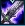

Combos
As a spellcaster, Lucian needs to optimise his spell timings to achieve his maximum DPS! The videos below grouped by difficulty illustrate just some of his combos.
Difficulty
W｜
Ardent Blaze(w). Has a small wind-up time but speeds Lucian up after he attacks an enemy marked by it
｜
Mouse click an enemy utilise your double shot passive
E｜
Relentless pursuit. A short dash used either to create distance / close a gap / or to maximise your dps
｜
Mouse click an enemy utilise your double shot passive
Q｜
Piercing Light. Your main damage ability, besides your passive.
Mouse click an enemy utilise your double shot passive
Difficulty
E+W｜
W cast just before the end of the E animation, to help shorten the length of the combo
｜
Blade of The Ruined King active - damage and slow the highlighted enemy
Mouse click an enemy utilise your double shot passive
R
The Culling. Lucians Ult cast at a slowed target whilst he is sped up is devastating